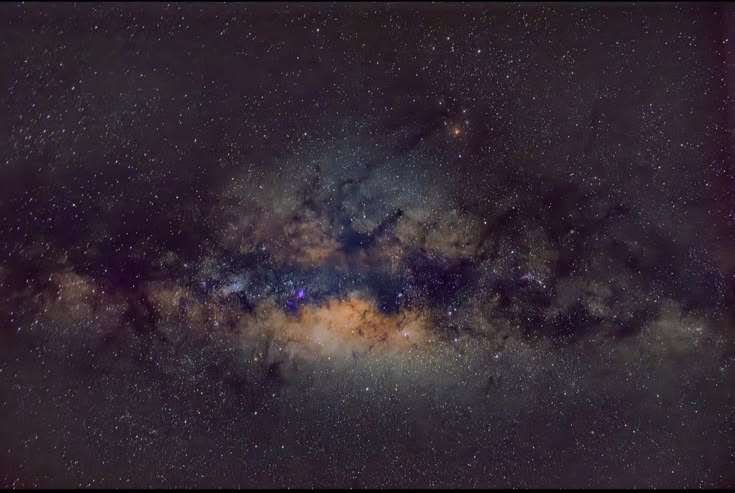
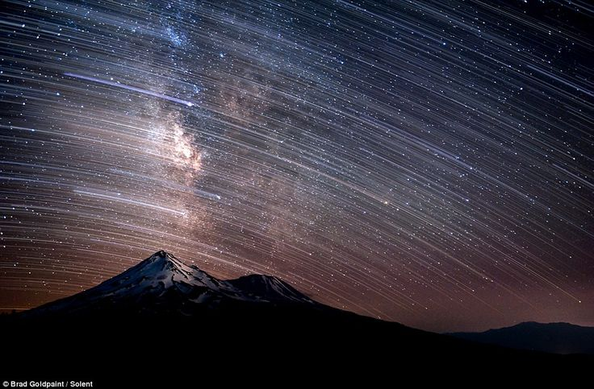
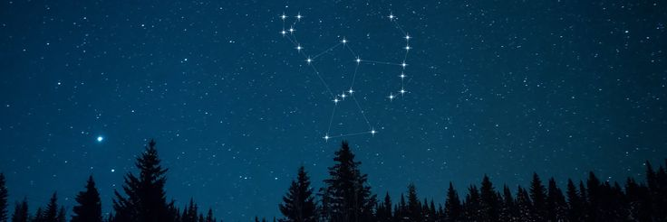
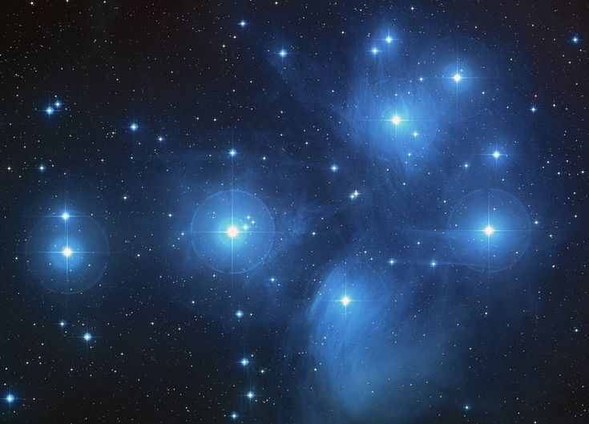
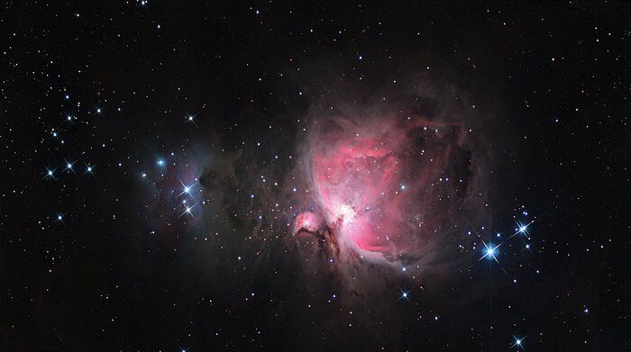
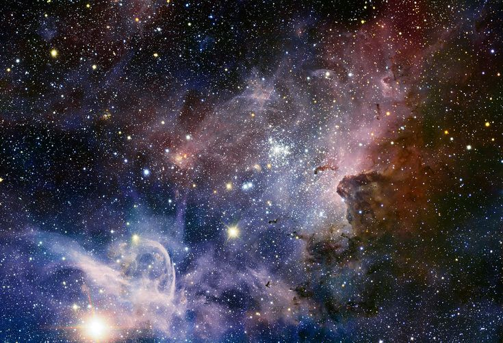
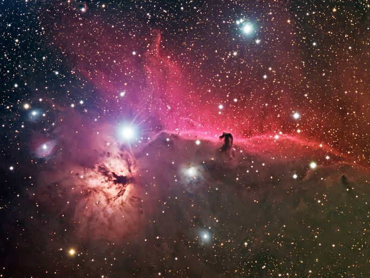
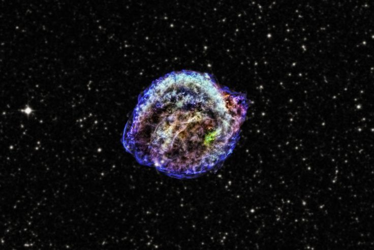
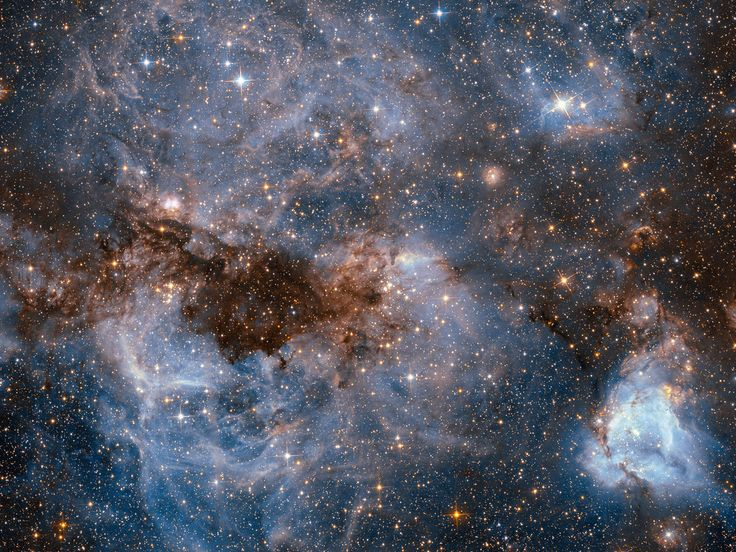

Panorama NARUNIKA
Mahakarya di balik ruang
Melukiskan sejuta cerita
Di balik gelapnya kanvas

Di sanalah jantung Bima Sakti berdenyut, tersembunyi di balik lautan bintang.

Jejak cahaya yang tertinggal di langit, seolah waktu sedang menulis kisahnya sendiri.

Sang pemburu berdiri di antara bintang, menjaga langit dalam diamnya yang abadi.

Sekumpulan bintang yang tampak seperti cahaya kecil yang berkumpul di kejauhan.

Awan gas tempat bintang-bintang baru lahir, di dalam gelap yang perlahan menjadi cahaya.

Sebuah hamparan kosmik tempat cahaya dan debu menari dalam keheningan semesta.

Siluet gelap yang berdiri di antara cahaya, seperti bayangan yang tersesat di angkasa.

Sisa dari sebuah bintang yang pernah bersinar, meninggalkan jejak kehidupannya di ruang angkasa.

Di balik awan kosmik ini, bintang-bintang perlahan menemukan awal dari kehidupannya.